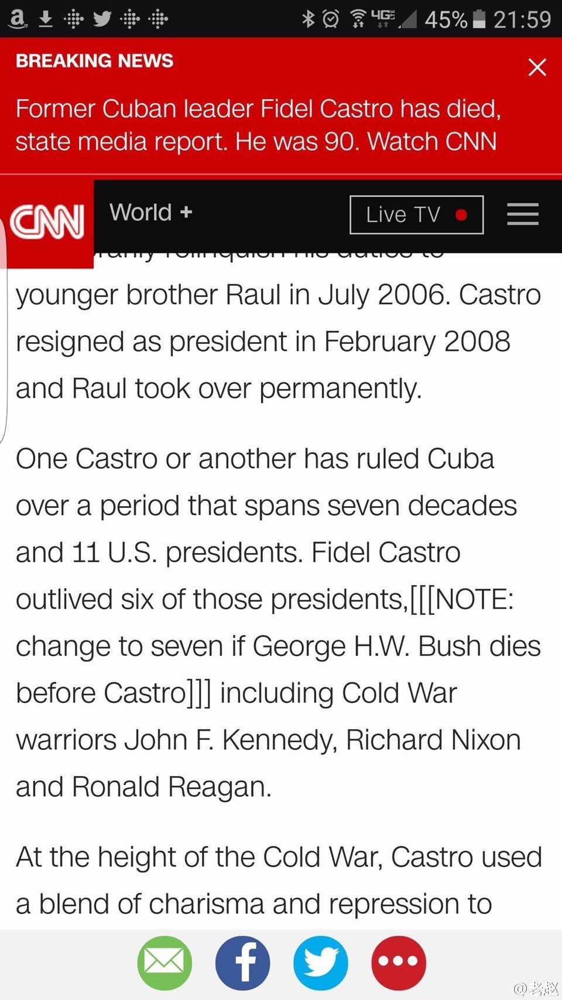

不奇怪吧。要不然媒体怎么能这么快写出大幅的专题。肯定之前有准备。 //@Apache9: //@SLY9:-_- （今天20:00发 ，括号里头删掉） //@马德森9://@西瓜大丸子汤:呵呵@老赵:CNN这稿子估计早就写好了，这次终于能发了，兴奋之余就疏忽了… 
习近平：“我多次同菲德尔·卡斯特罗同志见面，促膝畅谈，他的真知灼见令我深受启发，他的音容笑貌犹在眼前。” 习近平就古巴革命领袖菲德尔·卡斯特罗逝世向古巴国务委员会主席兼部长会议主席劳尔·卡斯特罗致唁电 习近平访问过几次古巴啊？